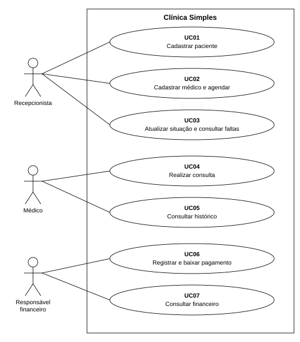
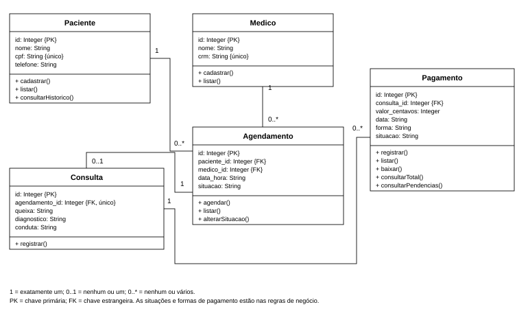

Clínica Simples
Análise e Projeto de Sistemas
Allan Vinicius Cabeggi Alvarenga — RGM: 45663742
Júlio César Benicio Inácio — RGM: 42693047
A Clínica Simples reúne o cadastro de pacientes e médicos, a agenda de atendimentos, as consultas e os pagamentos. O programa funciona no terminal, com JavaScript, Node.js e SQLite.
1 Método ágil Scrum
O trabalho está dividido em três sprints: cadastros e agenda; consultas e histórico; pagamentos. As tarefas ficam no backlog e passam pelas etapas A fazer, Em andamento e Concluído.
No início de cada sprint, a dupla escolhe as tarefas que serão desenvolvidas. O acompanhamento prevê conversas diárias de até dez minutos para tratar do andamento e das dificuldades. No encerramento, a revisão considera as funções concluídas e a retrospectiva define ajustes para a próxima etapa.
Uma tarefa está concluída quando a função atende ao requisito e sua documentação está atualizada. As datas das sprints indicam o planejamento do trabalho.
2 Squads e papéis
O projeto conta com um único squad, o Squad Clínica. Como a equipe tem dois integrantes, as responsabilidades de Scrum e desenvolvimento são divididas entre a dupla.
| Papel | Responsável | Responsabilidade |
|---|
| Product Owner | Allan Vinicius Cabeggi Alvarenga | Definir a prioridade das tarefas e acompanhar os requisitos. |
|---|
| Scrum Master | Júlio César Benicio Inácio | Acompanhar as sprints e ajudar a resolver impedimentos. |
|---|
| Desenvolvimento | Allan Vinicius Cabeggi Alvarenga | Implementar o menu e as funções do programa. |
|---|
| Banco de dados | Júlio César Benicio Inácio | Organizar as tabelas, os relacionamentos e as consultas SQL. |
|---|
| Documentação | Ambos os integrantes | Organizar os requisitos, o backlog e os diagramas. |
|---|
3 Requisitos e regras de negócio
3.1 Requisitos funcionais
Os 15 requisitos funcionais descrevem as operações do sistema.
| RF01 | Cadastrar pacientes com nome, CPF e telefone, impedindo CPF duplicado. |
|---|
| RF02 | Listar os pacientes com seus códigos de identificação. |
|---|
| RF03 | Cadastrar médicos com nome e CRM e listar seus códigos. |
|---|
| RF04 | Criar agendamentos vinculados a um paciente e a um médico. |
|---|
| RF05 | Listar a agenda com paciente, médico, data, horário e situação. |
|---|
| RF06 | Confirmar um agendamento que esteja aberto. |
|---|
| RF07 | Cancelar um agendamento aberto e impedir que gere uma consulta. |
|---|
| RF08 | Registrar o não comparecimento e listar os pacientes que faltaram. |
|---|
| RF09 | Registrar queixa, diagnóstico e conduta da consulta e marcar o agendamento como Realizado. |
|---|
| RF10 | Consultar todas as consultas de um paciente, em ordem de data. |
|---|
| RF11 | Registrar um ou vários pagamentos vinculados a uma consulta. |
|---|
| RF12 | Listar pagamentos com código, consulta, valor, data, forma e situação. |
|---|
| RF13 | Dar baixa em um pagamento pendente, registrando o recebimento. |
|---|
| RF14 | Consultar o total recebido entre duas datas. |
|---|
| RF15 | Listar pacientes com pagamentos pendentes, telefone, valor e data prevista. |
|---|
O sistema se limita aos cadastros, à agenda, às consultas e aos pagamentos. O histórico é formado pelas consultas, sem prontuário separado. Não há login, integração bancária ou edição e exclusão geral dos cadastros. Especialidades, convênios, alergias, exames, medicamentos, prescrições, procedimentos, funcionários e múltiplas unidades ficam fora do escopo.
3.2 Requisitos não funcionais
| RNF01 | Execução | Utilizar Node.js 22.13 ou superior, sem instalação de pacotes externos. |
|---|
| RNF02 | Armazenamento | Salvar os dados em um banco SQLite local e mantê-los após fechar o programa. |
|---|
| RNF03 | Interface | Usar um menu numerado no terminal, com mensagens de confirmação e de erro. |
|---|
| RNF04 | Integridade | Usar parâmetros nas consultas SQL, chaves estrangeiras e restrições para evitar registros duplicados ou sem vínculo. |
|---|
| RNF05 | Valores monetários | Armazenar os valores em centavos inteiros e recusar entradas fora do limite de inteiros seguros do JavaScript. |
|---|
| RNF06 | Organização | Concentrar as funções em main.js e a estrutura do banco em schema.sql. O package.json define o comando de execução. |
|---|
| RNF07 | Funcionamento local | Permitir o uso do programa sem conexão com a internet. |
|---|
3.3 Regras de negócio
| RN01 | O CPF deve ter 11 dígitos, sem pontuação no armazenamento, e ser único. Não há cálculo dos dígitos verificadores. |
|---|
| RN02 | O CRM deve ser único e é convertido para letras maiúsculas. O sistema não valida o formato da UF nem consulta órgãos profissionais. |
|---|
| RN03 | Cada agendamento pertence a um paciente e a um médico existentes. Pacientes e médicos podem possuir vários agendamentos. |
|---|
| RN04 | Um médico não pode ter dois agendamentos no mesmo instante. Um cancelamento libera o horário. O controle compara horários de início, sem calcular a duração. |
|---|
| RN05 | As situações da agenda são Agendado, Confirmado, Realizado, Cancelado e Não compareceu. Agendamentos encerrados não são reabertos pelo menu. |
|---|
| RN06 | Somente agendamentos Agendados ou Confirmados podem gerar consulta. Cancelamentos, faltas e atendimentos já realizados impedem novo registro. |
|---|
| RN07 | Um agendamento gera no máximo uma consulta. Ela pertence ao paciente e ao médico da agenda; cada paciente e médico pode participar de várias consultas. |
|---|
| RN08 | Queixa, diagnóstico e conduta são obrigatórios. A consulta usa a data e o horário da agenda e, ao ser registrada, muda a situação para Realizado na mesma operação. |
|---|
| RN09 | Uma consulta pode ter nenhum, um ou vários pagamentos. Cada pagamento pertence a uma única consulta existente. |
|---|
| RN10 | O valor do pagamento deve ser positivo e ter até duas casas decimais na entrada. |
|---|
| RN11 | As formas de pagamento são dinheiro, cartão de crédito, cartão de débito e PIX. |
|---|
| RN12 | O pagamento fica Pendente ou Pago. A data é prevista enquanto pendente; a baixa registra Pago e a data atual do computador. Um pagamento pago não recebe nova baixa. |
|---|
| RN13 | O total por período soma somente pagamentos pagos, pela data de recebimento. As datas inicial e final são incluídas e o início não pode ser posterior ao fim. |
|---|
4 Sprints e requisitos de cada entrega
O quadro relaciona as datas previstas, as funções de cada sprint e os requisitos correspondentes.
| Sprint | Período previsto | Funções | Requisitos |
|---|
| 1 | 05/10/2026 a 11/10/2026 | Cadastros de pacientes e médicos, consulta de códigos, criação de agendamentos e listagem da agenda. | RF01, RF02, RF03, RF04, RF05 |
|---|
| 2 | 12/10/2026 a 18/10/2026 | Confirmação, cancelamento, faltas, registro das consultas e histórico do paciente. | RF06, RF07, RF08, RF09, RF10 |
|---|
| 3 | 19/10/2026 a 25/10/2026 | Registro, listagem e baixa dos pagamentos, total recebido por período e lista de pendências. | RF11, RF12, RF13, RF14, RF15 |
|---|
Backlog das sprints
O backlog reúne as tarefas de cada sprint. As prioridades indicam a ordem de desenvolvimento.
| Item | Tarefa | Requisitos | Prioridade | Sprint |
|---|
| PB01 | Cadastro e listagem de pacientes. | RF01, RF02 | Alta | 1 |
|---|
| PB02 | Cadastro de médicos e agenda de atendimentos. | RF03, RF04, RF05 | Alta | 1 |
|---|
| PB03 | Confirmação e cancelamento de agendamentos. | RF06, RF07 | Alta | 2 |
|---|
| PB04 | Registro das consultas. | RF09 | Alta | 2 |
|---|
| PB05 | Histórico do paciente. | RF10 | Alta | 2 |
|---|
| PB06 | Registro e consulta de faltas. | RF08 | Média | 2 |
|---|
| PB07 | Registro, consulta e baixa de pagamentos. | RF11, RF12, RF13 | Alta | 3 |
|---|
| PB08 | Total recebido por período e pendências. | RF14, RF15 | Alta | 3 |
|---|
5 Diagrama de casos de uso
A recepcionista cuida dos cadastros e da agenda. O médico registra as consultas e acompanha o histórico. O responsável financeiro registra os pagamentos e consulta os valores recebidos ou pendentes. Essas atividades usam o mesmo menu, sem login por perfil.

O paciente solicita o atendimento à recepção e não utiliza a aplicação diretamente.
6 Diagrama de classes do sistema
As cinco classes organizam os dados do sistema. Os atributos correspondem aos campos do banco, e as operações são executadas pelas funções de main.js.

1 = exatamente um; 0..1 = nenhum ou um; 0..* = nenhum ou vários. PK é chave primária e FK é chave estrangeira.
Detalhamento dos casos de uso
UC01 Cadastrar paciente
Ator: Recepcionista. Requisitos: RF01, RF02. Pré-condição: sistema aberto.
A recepção informa nome, CPF e telefone. O programa confere o formato e a duplicidade do CPF e salva o cadastro. A listagem permite consultar os pacientes e seus códigos.
Campos vazios, CPF fora do formato ou já cadastrado impedem o registro.
UC02 Cadastrar médico e agendar
Ator: Recepcionista. Requisitos: RF03, RF04, RF05. Pré-condição: paciente cadastrado.
A recepção cadastra o médico com nome e CRM/UF. Com os códigos do paciente e do médico, informa a data e o horário da consulta. O agendamento é salvo com situação Agendado.
O registro é recusado quando o CRM já existe, algum código não corresponde a um cadastro, a data é inválida ou o médico já tem aquele horário ocupado.
UC03 Atualizar situação e consultar faltas
Ator: Recepcionista. Requisitos: RF06, RF07, RF08. Pré-condição: agendamento existente e aberto.
A recepção consulta a agenda, informa o código do agendamento e escolhe confirmar, cancelar ou marcar falta. A lista de faltas mostra os agendamentos com situação Não compareceu.
Agendamentos encerrados não podem ser alterados. Um cancelamento ou uma falta impede o registro da consulta.
UC04 Realizar consulta
Ator: Médico. Requisitos: RF09. Pré-condição: agendamento com situação Agendado ou Confirmado.
O médico informa o código de um agendamento aberto e registra queixa, diagnóstico e conduta. A consulta fica ligada ao paciente e ao médico da agenda, que passa para Realizado.
O registro é recusado se houver campo vazio ou se o agendamento não existir, estiver cancelado, tiver falta registrada ou já possuir consulta.
UC05 Consultar histórico
Ator: Médico. Requisitos: RF10. Pré-condição: paciente cadastrado.
O médico informa o código do paciente. O histórico mostra suas consultas em ordem de data, com horário, profissional, queixa, diagnóstico e conduta.
Se não houver consultas, aparece a mensagem Nenhum registro encontrado. A consulta ao histórico não altera os dados.
UC06 Registrar e baixar pagamento
Ator: Responsável financeiro. Requisitos: RF11, RF12, RF13. Pré-condição: consulta registrada.
O responsável financeiro informa o código da consulta, o valor, a data, a forma e a situação do pagamento. A listagem mostra os pagamentos cadastrados. A baixa muda um pagamento pendente para Pago e registra a data atual do computador.
Consulta inexistente, valor ou data inválidos impedem o cadastro. Pagamento inexistente ou já pago não recebe nova baixa.
UC07 Consultar financeiro
Ator: Responsável financeiro. Requisitos: RF14, RF15. Pré-condição: sistema aberto.
O responsável financeiro informa um período para consultar o total recebido. A lista de pendências mostra paciente, telefone, código do pagamento, valor e data prevista.
Um período inválido gera erro. Sem recebimentos, o total é zero; sem pendências, a lista informa que nenhum registro foi encontrado.